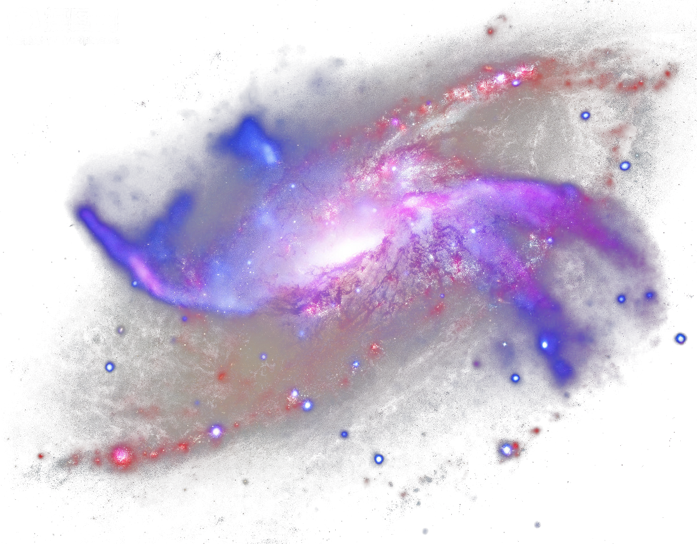
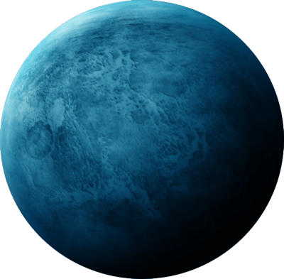
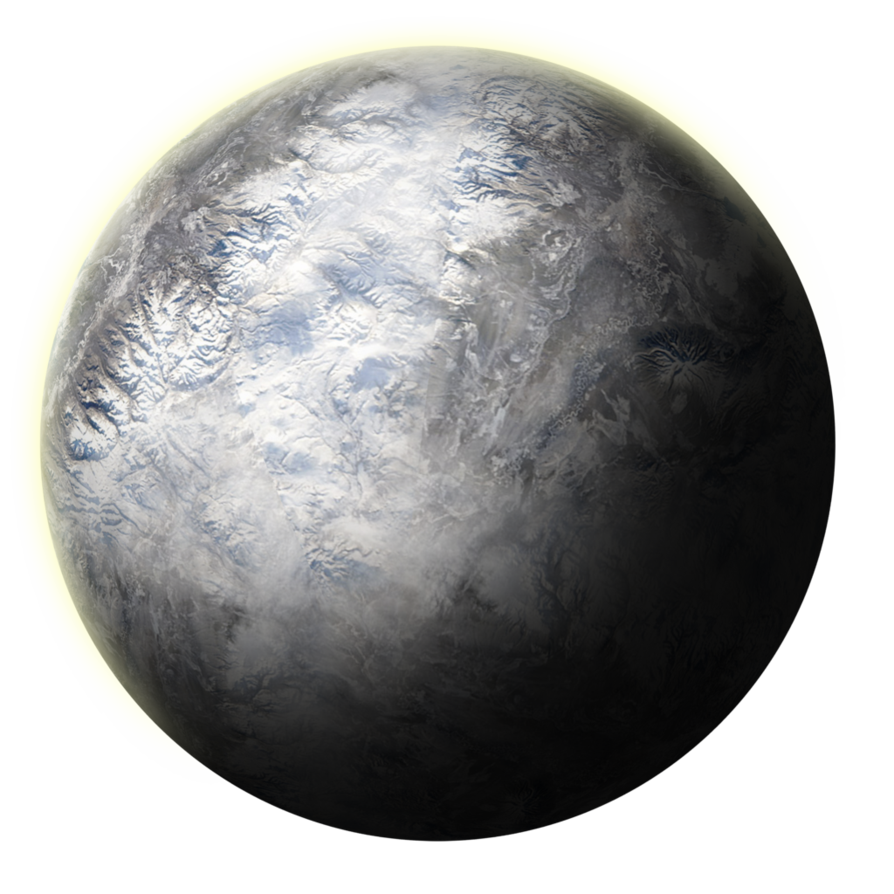
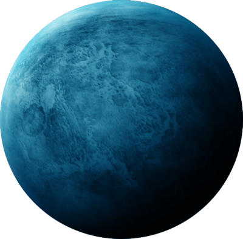
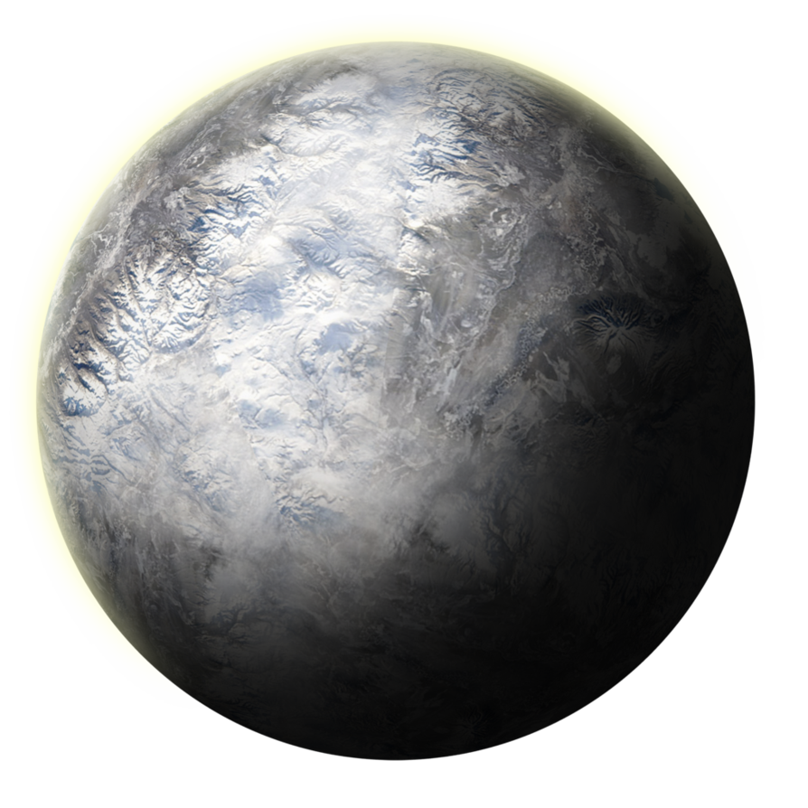

Our Universe . . .
...is all of space and time and their contents, including planets, stars, galaxies, and all other forms of matter and energy. While the spatial size of the entire Universe is unknown, it is possible to measure the size of the observable universe, which is currently estimated to be 93 billion light years in diameter...

Milky Way
...is the galaxy that contains the Solar System, with the name describing the galaxy's appearance from Earth: a hazy band of light seen in the night sky formed from stars that cannot be individually distinguished by the naked eye...
Earth is the third planet from the Sun and the only astronomical object known to harbor life. According to radiometric dating and other sources of evidence, Earth formed over 4.5 billion years ago. Earth's gravity interacts with other objects in space, especially the Sun and the Moon, Earth's only natural satellite...

Earth's axis of rotation is tilted with respect to its orbital plane, producing seasons on Earth. The gravitational interaction between Earth and the Moon causes tides, stabilizes Earth's orientation on its axis and gradually slows its rotation.Earth is the densest planet in the Solar System and the largest and most massive of the four terrestrial planets...


 


